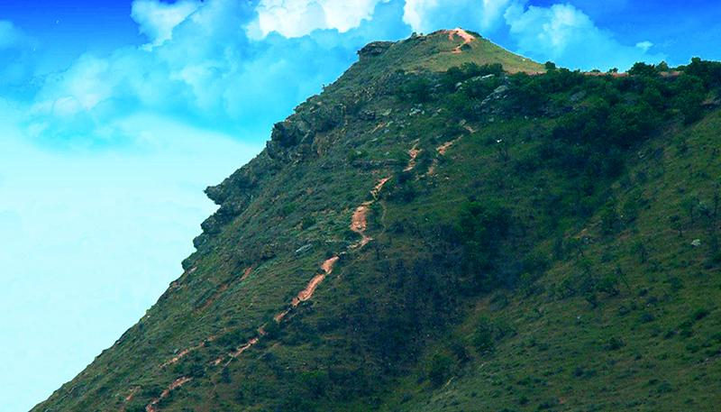
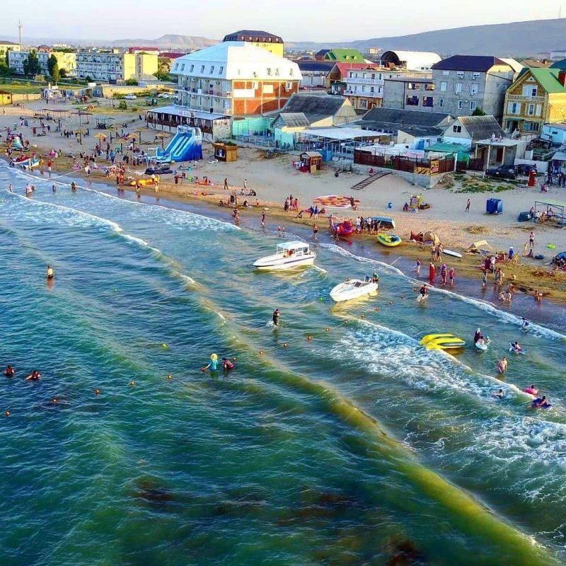
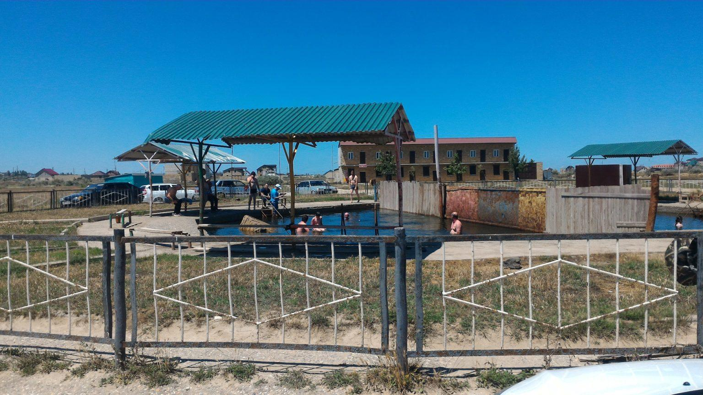
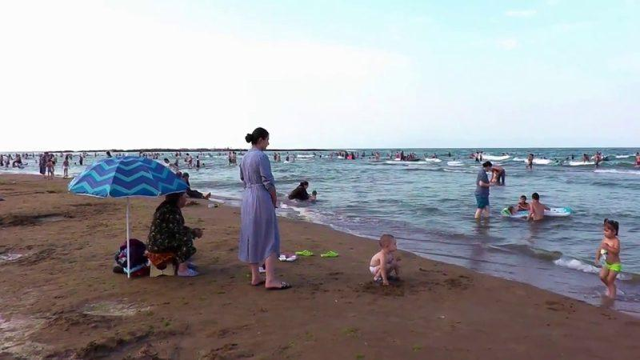
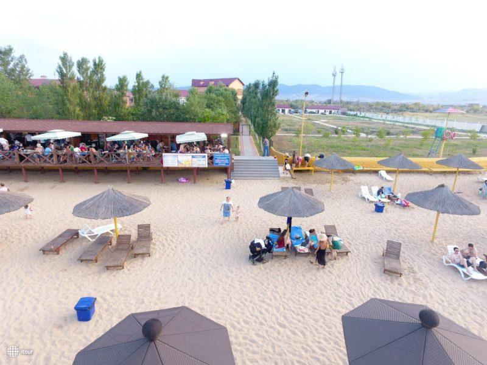
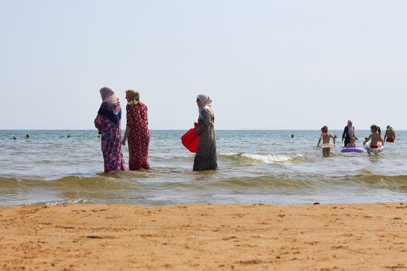

Избербаш лежит на равнине между Каспийским морем и горой Изберг-Тау. Часть горы напоминает профиль нашего замечательного поэта А.С. Пушкина, это сходство заметил еще писатель Александр Дюма, путешествовавший по Кавказу. Сейчас эту гору чаще называют Пушкин-Тау.
Российский поэт Николай Доризо посвятил этой горе такие строки:
«Есть такая скала в Дагестане,
Что один поворот головы —
И в далеком ее очертанье
Профиль Пушкина видите вы.
Не мираж, чья мгновенна причуда,
Не усталого зренья обман,
Эту явь, это зримое чудо
Знает с гордостью весь Дагестан…»
Даже есть легенда по поводу возникновения такой скалы: когда Пушкин был застрелен Дантесом, в Дагестане произошло землетрясение и, отломившаяся часть скалы создала профиль Пушкина. Но это только легенда, подтверждения ей нет.

А слово Избербаш можно перевести с кумыкского языка «Йиз бир баш», как «След на вершине горы». В давние времена мимо горы проходил караванный торговый путь, в этих низинах у моря есть болотные топи, которые еще в древности всадники старались обогнуть или побыстрей пересечь, так как они имели не хорошую славу и назывались долинами смерти.
Поселок здесь на болотистой местности возник в 1931 году, когда искали нефть и проводили разведочные бурения. В 1936 г. скважина №8 дала первую нефть, Изберг стал первым в Дагестане пунктом нефтедобывающей индустрии, поселок активно развивался и в 1949 году становится городом.

Но самое первое маленькое поселение у горы появилось еще в 1900 году, здесь немцы строили железную дорогу, чтобы связать северный и южный Дагестан. В связи с чем существует еще одна версия появления названия горы: немцы обратили внимание на то, что здесь есть интересная возвышенность, они говорили «дас ист берг», так и назвали железнодорожную станцию — Изберг. А уж потом местные жители добавили «баш» — голова, вот так и появился Избербаш. Профиль Пушкина можно увидеть только на окраине города, а так это просто небольшая гора высотой 220 метров.
В городе есть еще одно интересное место: родник, из которого бьет очень горячая минеральная вода. Несколько лет назад здесь сделали термальный бассейн под открытым небом с раздевалками и прочими прилагающимися помещениями, стали брать плату, и вдруг вода пропала. А когда плату отменили, вода снова пошла! И теперь в минеральной воде можно купаться бесплатно. У бассейна песчаное дно, со дна бурными пузырями поднимается горячая вода, такое впечатление, что ты заходишь в кипящую воду. Вода и в самом деле очень горячая, приходится заходить очень медленно, чтобы привыкнуть к этой температуре.

Бассейн неглубокий с камнями-валунами, и там долго не посидишь, первый раз только пять минут выдержала, жарче, чем в крепкой бане. Интересно, что посередине источника стоит железный забор, разделяя мужскую и женскую половину, как положено по мусульманским законам. Недалеко от источника есть два кафетерия с верандами, где можно отдохнуть после горячего купания.
Пляжи Избербаша
Пляжей в городе несколько, мы жили около Приморского пляжа, от него до термального бассейна пешком минут 40, или можно на такси доехать, общественного транспорта туда нет. Приморский пляж, как и Центральный (Городской), оборудован кабинками для переодевания, есть немного навесов от солнца. Шезлонгов почти нет, туалетов нет, но вдоль берега есть разные кафе, столовые, веранды.

Развлечения у моря обычные: «бананы», катера, парашюты. Если от Приморского пляжа пройти к Городскому, то увидим толпу народа и большой аквапарк недалеко от берега. Если идти вдоль моря, в другую сторону налево к Заводскому пляжу, то видим живописные каменные берега, здесь вечером на закате можно организовать неплохую фотосессию.

Местный народ приветлив и спокоен, женщины купаются в одежде или просто сидят на берегу, дети роют в песке ямы, мужчины благодушно за ними наблюдают.

В июне, в начале июля море еще чистое, народу на пляже не очень много, но с 10 июля мы увидели здесь просто столпотворение – начали приезжать из соседней Чечни отдыхающие, стало шумно, беспокойно особенно по вечерам. Местной полиции прибавилось работы, но они молодцы, оперативно схватывали ситуацию. С появлением толпы пляж стал грязнее, да и море прогрелось и покрылось зеленой тиной. Нам досталось лишь два дня такого беспокойства, а затем мы улетели.
Не советую никому июльские пляжи Избербаша.
Может где-нибудь на окраине почище, не знаю. Нам повезло покупаться в чистом море в спокойное время. Так как Избербаш построен на месте болот, то по вечерам вылетают на охоту комары. Мы снимали трехкомнатный благоустроенный домик у хозяйки, и по вечерам включали от комаров фумигаторы в комнатах, во дворе за столом вечером долго не посидишь, искусают кровопийцы.
В городе есть два рынка, находятся рядом друг с другом, там есть все; очень понравились урбеч, местные сыры, фрукты, все качественное, вкусное и недорогое. Кафе «Тарелка» в городе тоже понравилось, там красиво и вкусно. В городе популярно местное недорогое такси «Анжи», а вот «бомбилы» здесь наворачивают неимоверные цены за поездки. Мы в больших городах уже отвыкли от таких частников, а вот в Избербаше они еще водятся.
В один прекрасный день мы на электричке съездили в древний город Дербент, что в 70 км от Избербаша, ехать чуть больше часа. Но это уже другая история.